Japan / Hokkaido / Higashikawa
Higashikawa
Higashikawa · Hokkaido
Higashikawa
Highlighted on the Hokkaido map.
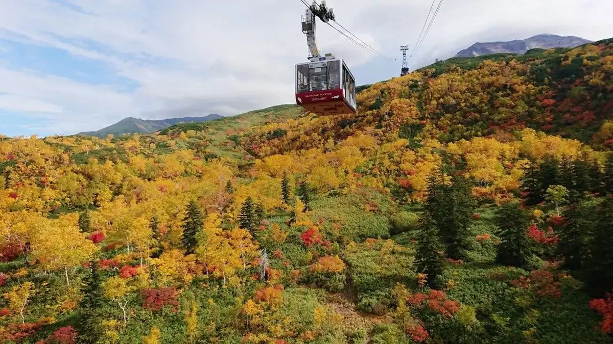
Stay
Ｔｈｅ Ｐｅａｋ Ｖｉｌｌａ Ｓｕｉｔｅ Ｈｏｋｋａｉｄｏ
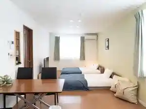
T H E P E A K V I L L A S U I T E H O K K A I D O
東川Hinna
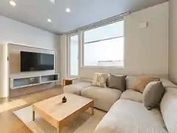
Higashikawa Hinna
andon
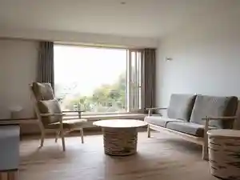
Andon
Suzuran Haus
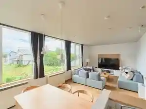
Suzuran Haus
東川ペリカン
Higashikawa Perikan
Dining
東川ペリカン
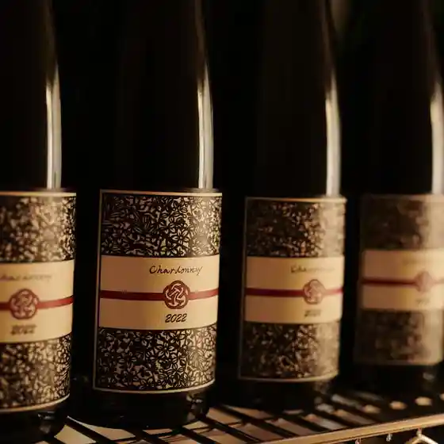
Higashikawa Perikan
PONSUKE
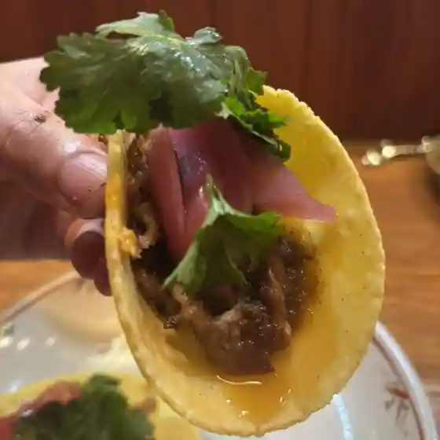
Ponsuke
平田こうじ店
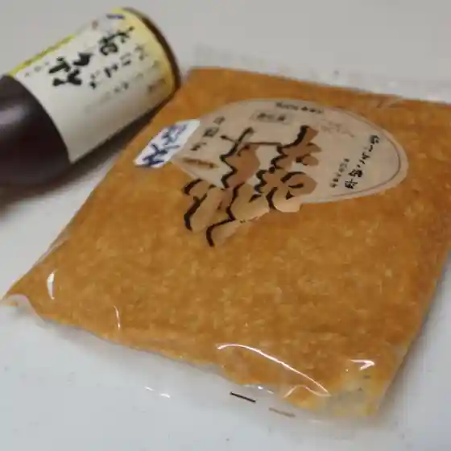
Hirata Kouji Mise
自由咖哩
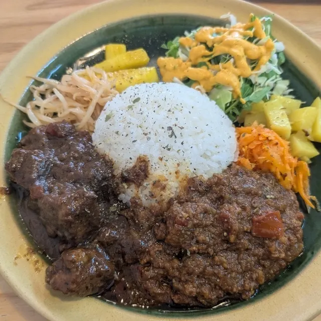
Jiyuu
ショップ 人来留
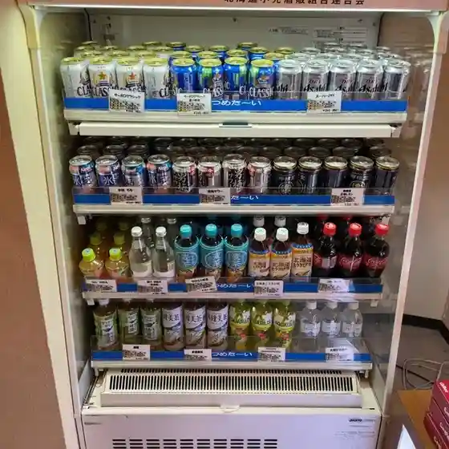
Shoppu Nin Rai Ryuu
ザ ロケット カフェ
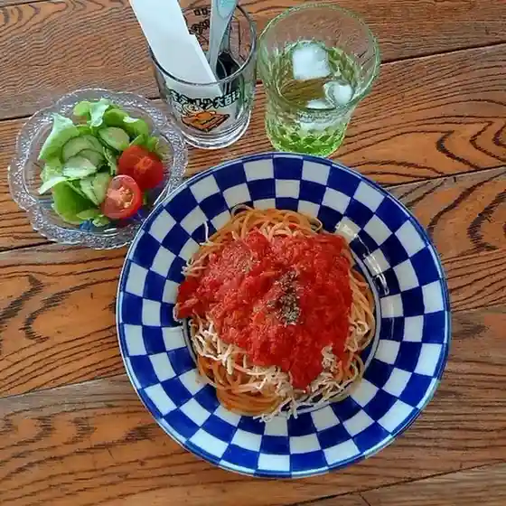
Za Roketto Kafe
平田とうふ店
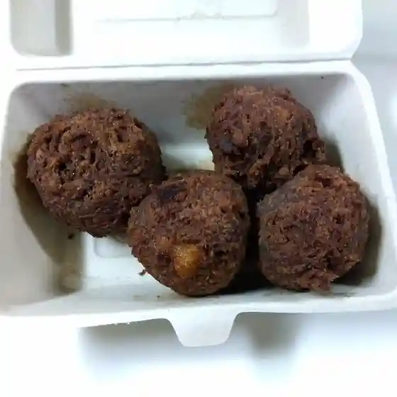
Hirata Toufu Mise
ケイズハウス 北海道
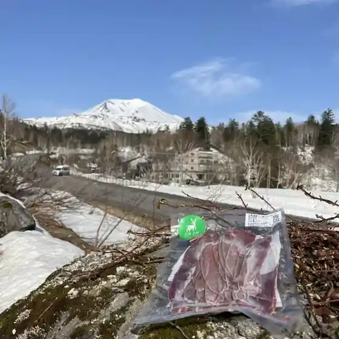
Keizuhausu Hokkaidou
ヨシノリ コーヒー
Yoshinori Koohii
ネイチャーズ
Neichaazu
Topeni coffee stand
Topeni Coffee Stand
三千櫻ショップ
Sanzen Sakura Shoppu
アートヴィレッジ杜季
Aatovirejji Mori Ki
PINY'S KITCHEN SONOまんま
Piny'S Kitchen Sono Manma
SALT
Salt
めんや 空葦
Menya Sora Ashi
月の恩返し
Gatsu No Ongaeshi
ティールーム トムテ
Teiiruumu Tomute
Vraie
Vraie
焼肉 焼鳥処 じゃけぇ
Yakiniku Yakitori Tokoro Jakee
北の住まい設計社 カフェ
Kita No Sumai Sekkei Sha Kafe
Hluboka
Hluboka
P-DASH GARDEN
P-Dash Garden
LITTLE NAP
Little Nap
Sights
Daisetsuzan Asahidake Ropuei
Daisetsuzan Asahidake Ropuei
Ropeway on Mount Asahi-dake (2,291 m), Hokkaido highest peak, for alpine views and flora in Daisetsuzan.
Asahidake
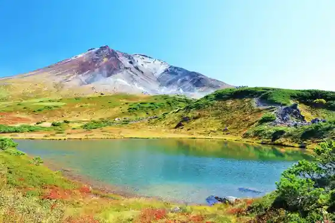
Asahidake
Mount Asahi-dake, Hokkaido highest peak and a Daisetsuzan National Park icon, with late alpine cherry and early autumn color.
Sugatami no Ike
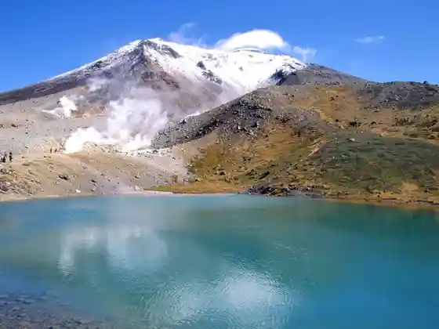
Sugatami no Ike
Sugatami-no-Ike crater ponds on Asahi-dake, reached by a roughly 1.7 km alpine loop hike of about 90 minutes.
Hagoromo Falls
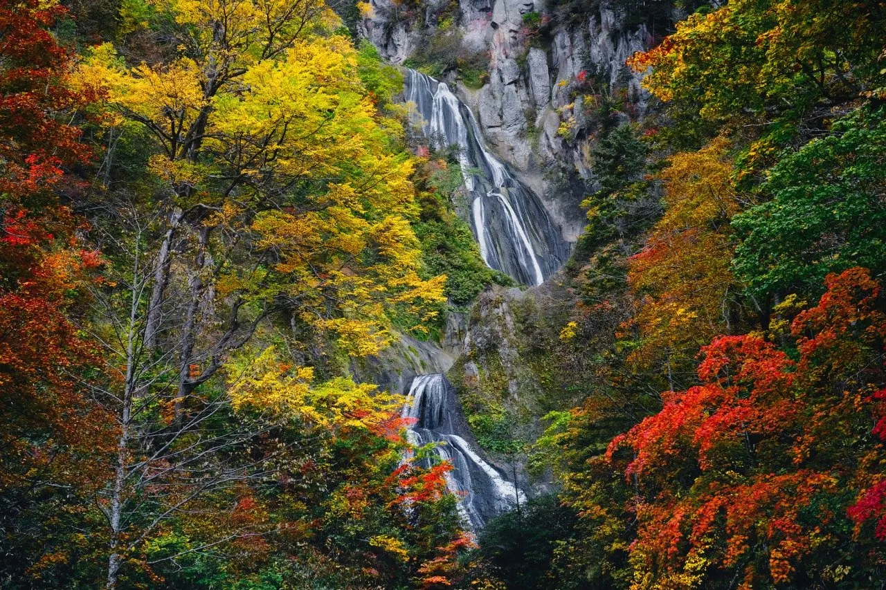
Hagoromo Falls
Hagoromo Falls in Tenninkyo: a seven-tier cascade about 270 m high, listed among Japan Top 100 Waterfalls.
Tenjin Kyo
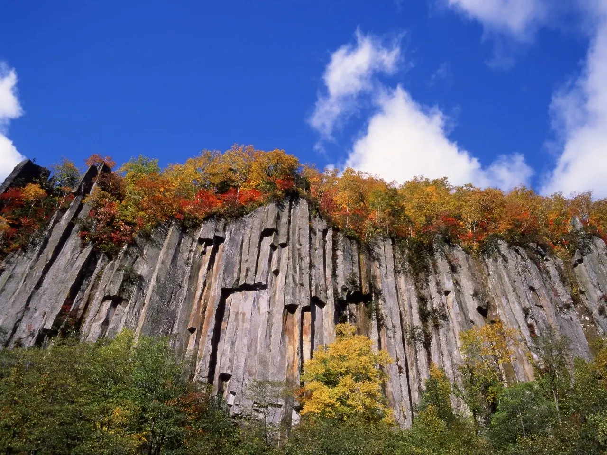
Tenjin Kyo
Tenninkyo gorge and hot-spring area with towering volcanic cliffs and waterfalls, with over a century of onsen history.
Chubetsu Lake
Chubetsu Lake
Chubetsu Lake, a reservoir formed by a multipurpose dam completed in 2007 on the upper Chubetsu River below Asahi-dake.
Sanzen Sakura Shuzo
Sanzen Sakura Shuzo
Michizakura Sake Brewery in Higashikawa, brewing with Daisetsuzan water and local rice after relocating from Gifu.
Asahidake Bijita Center
Asahidake Bijita Center
Asahidake Visitor Center at the foot of Mount Asahi-dake, with park information for safe Daisetsuzan visits.
Higashikawa Fukugo Koryu Shisetsu Sentopyua I & II
Higashikawa Fukugo Koryu Shisetsu Sentopyua I & II
Higashikawa Sentopia I & II community complex, linking design collections, photography culture, and Daisetsuzan views.
Oyuki Asahidake Gensui Park
Oyuki Asahidake Gensui Park
Taisetsu Asahidake Gensui Park at a Selected 100 Exquisite Waters of Japan spring fed by Daisetsuzan meltwater.